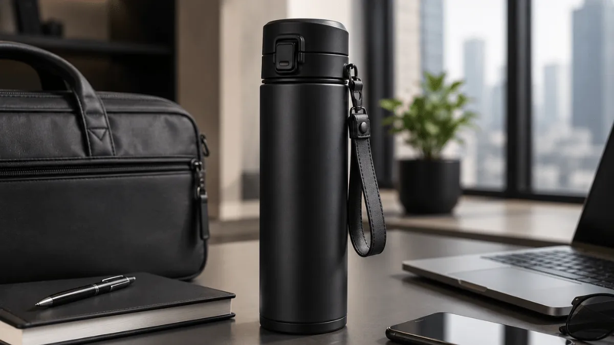

Apa yang Dimaksud dengan Merchandise Work From Anywhere?
Merchandise work from anywhere adalah kategori merchandise kantor yang secara khusus dirancang untuk mendukung gaya kerja fleksibel, di mana karyawan tidak selalu bekerja dari satu lokasi tetap.
Barang dalam kategori ini menekankan aspek portabilitas dan kepraktisan, bukan sekadar tampilan menarik.
Berbeda dengan merchandise kantor konvensional yang cenderung diasumsikan dipakai di meja kerja tetap, koleksi ini mempertimbangkan kondisi nyata karyawan yang berpindah tempat, seperti bekerja dari kafe, ruang kerja bersama, atau di rumah pada hari tertentu. Oleh karena itu, ukuran, berat, dan ketahanan barang menjadi pertimbangan penting dalam pemilihannya.
Konsep ini juga sering dikaitkan dengan pola kerja hybrid yang semakin umum diterapkan berbagai perusahaan, sehingga merchandise yang diberikan perlu benar-benar mendukung aktivitas kerja di luar kantor, bukan hanya menjadi suvenir dekoratif yang jarang dibawa bepergian.
Barang Apa Saja yang Cocok Masuk Koleksi Work From Anywhere?
Beberapa jenis barang secara alami cocok masuk dalam koleksi merchandise work from anywhere karena sifatnya yang ringkas dan mendukung mobilitas kerja.
- Tumbler atau botol minum berukuran ringkas menjadi pilihan utama karena mudah dimasukkan ke dalam tas dan tetap menjaga kebutuhan hidrasi selama bekerja di luar kantor. Desain yang tidak mudah bocor dan tahan lama menjadi nilai tambah penting untuk kategori ini.
- Tas laptop atau sling bag dengan kompartemen praktis juga menjadi barang inti dalam koleksi ini, karena karyawan yang bekerja fleksibel membutuhkan tempat yang aman untuk membawa perangkat kerja beserta kelengkapannya.
- Organizer kabel dan aksesori kecil seperti pouch multifungsi turut relevan, mengingat karyawan yang bekerja dari berbagai lokasi sering membawa kabel charger, mouse, atau earphone yang perlu tersusun rapi agar tidak tercecer.
- Notes ringkas atau planner ukuran saku juga dapat dimasukkan sebagai pelengkap, memberikan ruang bagi karyawan untuk mencatat hal penting saat bekerja di luar meja kerja utama, tanpa harus membawa perlengkapan tulis yang besar.

Mengapa Konsep Ini Relevan bagi Perusahaan Masa Kini?
Konsep work from anywhere relevan bagi perusahaan masa kini karena pola kerja yang tidak lagi terpaku pada satu lokasi tetap semakin banyak diterapkan, sehingga kebutuhan karyawan terhadap barang kerja yang portabel juga meningkat.
Perusahaan yang menyediakan merchandise dengan konsep ini menunjukkan pemahaman terhadap kebutuhan nyata karyawan, bukan sekadar mengikuti tren tanpa mempertimbangkan relevansi fungsional. Hal ini dapat meningkatkan apresiasi karyawan terhadap perhatian perusahaan pada kenyamanan kerja mereka.
Selain itu, karena barang dalam koleksi ini dibawa berpindah tempat, eksposur logo brand secara alami menjangkau lebih banyak lingkungan berbeda dibanding merchandise yang hanya dipakai di dalam kantor. Tumbler atau tas yang dibawa ke kafe, ruang kerja bersama, atau perjalanan dinas turut memperluas titik kontak visual brand kepada orang-orang di sekitar karyawan tersebut.
"Bagi perusahaan yang ingin menonjolkan citra modern dan adaptif terhadap perubahan gaya kerja, koleksi merchandise bertema ini juga dapat menjadi bagian dari strategi komunikasi budaya kerja internal."
— Mega Anggun, Penulis Merchandise Kantor
Hal yang Perlu Diperhatikan Saat Memilih Merchandise Work From Anywhere
Pemilihan merchandise untuk konsep ini sebaiknya tidak hanya berpatokan pada desain menarik, tetapi juga mempertimbangkan aspek kepraktisan penggunaan sehari-hari.
Ukuran dan berat barang perlu diperhatikan agar tidak membebani karyawan saat dibawa bepergian, terutama untuk barang yang akan dipakai secara rutin dalam jangka panjang.
Material yang dipilih sebaiknya tahan terhadap penggunaan intensif, mengingat barang dalam kategori ini cenderung lebih sering dibawa dan digunakan dibanding merchandise yang hanya disimpan di meja kerja tetap.
Desain visual tetap perlu selaras dengan identitas brand perusahaan, namun sebaiknya dibuat cukup fleksibel agar tidak terkesan terlalu formal atau kaku ketika dipakai di lingkungan yang lebih santai seperti kafe atau ruang kerja bersama.

Kesimpulan
Merchandise kantor unik dengan konsep work from anywhere menjawab kebutuhan nyata karyawan yang bekerja secara fleksibel, dengan menekankan aspek portabilitas dan kepraktisan tanpa mengesampingkan identitas brand. Barang seperti tumbler ringkas, tas laptop praktis, dan aksesori pendukung mobilitas menjadi pilihan yang relevan untuk koleksi ini, sekaligus memperluas eksposur brand ke berbagai lingkungan kerja yang lebih beragam.